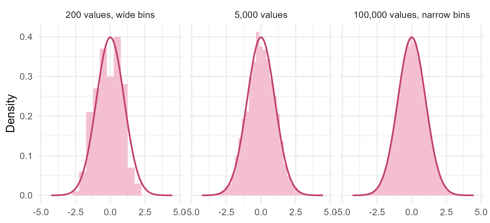
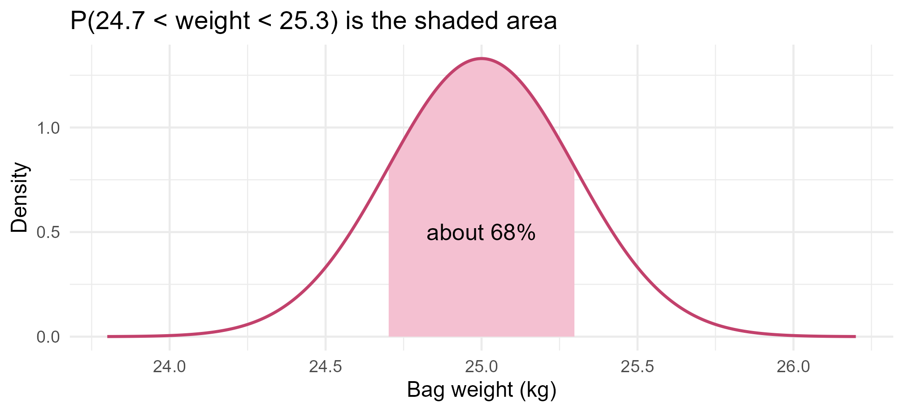
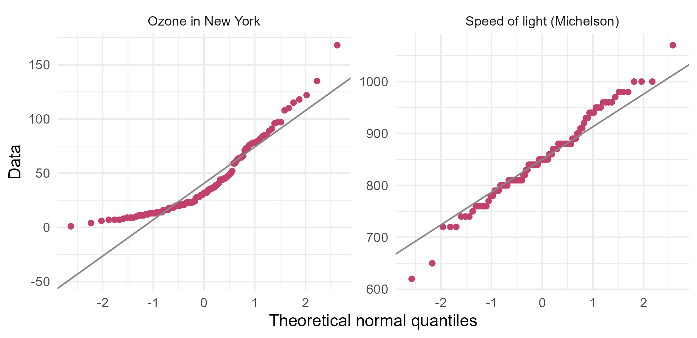

Module 0 · Lesson 10 of 14 Week 10 of 160 About 5–7 hours
Continuous distributions
Probability as area under a curve: uniform, exponential and normal
Use density functions and integrals to compute probabilities, work with the uniform, exponential and normal distributions, standardize values, and check normality with Q-Q plots.
Temperatures, pressures, fill weights and lifetimes can take any value in a range, not just whole numbers. These are continuous random variables, and they need a different kind of distribution. Instead of a probability for each value, there’s a curve, and probabilities are areas under it. This is where your calculus comes in, because areas under curves are integrals! This lesson introduces the three continuous distributions you’ll use most, above all the normal distribution, which much of statistics is built on.
If you’ve ever wondered what integrals are for, here’s one answer: every probability for a continuous variable is an integral. And R can work them out for you.
In this lesson you’ll:
- see why continuous variables need density curves
- find probabilities as areas, with
integrate() - model detection delays, equipment lifetimes and fill weights
- standardize normal values, and use the 68–95–99.7 rule
- check whether data look normal, with a Q-Q plot
From histograms to density curves
For a continuous variable, the probability of any exact value is zero. The chance that a bag weighs exactly 25.000000… kg is nil. Only ranges, like “between 24.9 and 25.1 kg”, have a positive probability.
Draw a histogram on a density scale, where each bar’s area is the proportion of the data in its bin. As the data grows and the bins get narrower, the bars trace out a smooth curve:
Show the code
set.seed(10)
sim <- data.frame(x = rnorm(100000))
panels <- rbind(
transform(sim[1:200, , drop = FALSE], panel = "200 values, wide bins"),
transform(sim[1:5000, , drop = FALSE], panel = "5,000 values"),
transform(sim, panel = "100,000 values, narrow bins")
)
panels$panel <- factor(panels$panel, levels = unique(panels$panel))
bw <- c("200 values, wide bins" = 0.5, "5,000 values" = 0.25, "100,000 values, narrow bins" = 0.05)
ggplot(panels, aes(x = x)) +
lapply(names(bw), function(p) geom_histogram(data = panels[panels$panel == p, ], aes(y = after_stat(density)),
binwidth = bw[[p]], fill = "#F4C0D1", color = NA)) +
stat_function(fun = dnorm, color = "#C2416C", linewidth = 0.8) +
facet_wrap(~ panel) +
labs(x = NULL, y = "Density") +
theme_minimal(base_size = 12)
That limiting curve is the variable’s probability density function (PDF), f(x).
Densities, areas and integrals
A density function is never negative, and the total area under it is 1. Probabilities are areas:
P(a \le X \le b) = \int_a^b f(x)\,dx .
The cumulative distribution function (CDF) gives the area to the left of a point: F(x) = P(X \le x) = \int_{-\infty}^{x} f(t)\,dt. By the fundamental theorem of calculus, the density is the derivative of the CDF, f(x) = F'(x). And because single points have zero probability, it makes no difference whether you write < or \le.
Here’s a simple example. A reaction’s conversion, the fraction of reactant that gets converted, always lies between 0 and 1. Say the conversion in a batch has the density f(x) = 2x on [0, 1], so high conversions are more likely than low ones. (It’s a triangle with base 1 and height 2, so its area is 1.) What’s the chance that a batch converts at most half its reactant? By hand,
P(X \le 0.5) = \int_0^{0.5} 2x\,dx = \Big[x^2\Big]_0^{0.5} = 0.25 .
R’s integrate() computes integrals numerically. Give it a function and the limits:
f <- function(x) 2 * x
integrate(f, lower = 0, upper = 0.5)
#> 0.25 with absolute error < 2.8e-15
integrate(f, lower = 0, upper = 1) # the total area: 1
#> 1 with absolute error < 1.1e-14The mean and variance work just like the discrete versions, with the sums replaced by integrals:
E(X) = \mu = \int x\,f(x)\,dx, \qquad \text{Var}(X) = \int (x - \mu)^2 f(x)\,dx = E(X^2) - \mu^2 .
For the conversion, E(X) = \int_0^1 2x^2\,dx = 2/3 and E(X^2) = \int_0^1 2x^3\,dx = 1/2, so \text{Var}(X) = 1/2 - 4/9 = 1/18:
mu <- integrate(function(x) x * f(x), 0, 1)$value
ex2 <- integrate(function(x) x^2 * f(x), 0, 1)$value
c(mean = mu, variance = ex2 - mu^2)
#> mean variance
#> 0.66666667 0.05555556$value pulls the number out of integrate()’s result. So the average conversion is 2/3, about 67%.
Your turn. With the same density, use integrate() to find the probability that the conversion is above 0.5.
integrate(f, lower, upper) returns an object. Add $value to get the number.
f <- function(x) 2 * x
integrate(f, lower = 0.5, upper = 1)$valueBy hand: \big[x^2\big]_{0.5}^{1} = 1 - 0.25 = 0.75.
The uniform distribution
The uniform distribution on [a, b] makes every value in the interval equally likely. Its density is flat, f(x) = 1/(b - a), so probabilities are just proportions of the interval’s length. Its mean is (a + b)/2 and its variance is (b - a)^2/12.
An autosampler draws a sample from the reactor every 20 minutes. If a disturbance starts at a random moment, the delay until the next sample can catch it is uniform on [0, 20] minutes:
punif(15, min = 0, max = 20) # P(delay <= 15)
#> [1] 0.75
1 - punif(15, min = 0, max = 20) # P(delay > 15)
#> [1] 0.25
qunif(0.5, min = 0, max = 20) # the median delay
#> [1] 10You’ve already used runif(), which draws uniform random numbers, in Lesson 8.
NoteGo deeper: the uniform’s variance
With f(x) = 1/(b-a) on [a, b],
E(X) = \int_a^b \frac{x}{b-a}\,dx = \frac{b^2 - a^2}{2(b-a)} = \frac{a+b}{2}, \qquad E(X^2) = \int_a^b \frac{x^2}{b-a}\,dx = \frac{b^3 - a^3}{3(b-a)} = \frac{a^2 + ab + b^2}{3} .
So \text{Var}(X) = \frac{a^2 + ab + b^2}{3} - \frac{(a+b)^2}{4} = \frac{(b-a)^2}{12}. For the autosampler, the standard deviation of the delay is 20/\sqrt{12} \approx 5.8 minutes.
Your turn. What’s the probability that a disturbance is caught within 5 minutes?
The delay is uniform on [0, 20]. Use punif() with min and max.
punif(5, min = 0, max = 20)The exponential distribution: lifetimes
When events happen independently at a constant average rate \lambda, the Poisson distribution from the last lesson counts them. The waiting time until the next event follows the exponential distribution:
f(x) = \lambda e^{-\lambda x}, \qquad F(x) = 1 - e^{-\lambda x}, \qquad x \ge 0 .
Its mean and standard deviation are both 1/\lambda. Reliability engineers use it all the time for random failures. A pump with a mean time between failures (MTBF) of 2,000 hours fails at a rate of \lambda = 1/2000 per hour. What’s the chance that it survives a 1,000-hour production campaign?
1 - pexp(1000, rate = 1 / 2000) # P(lifetime > 1000 hours) = e^(-0.5)
#> [1] 0.6065307
exp(-0.5)
#> [1] 0.6065307About 61%. The exponential has an unusual property: it’s memoryless. If the pump has already run for 1,000 hours, the chance that it runs another 1,000 is exactly the same as for a brand-new pump:
P(X > s + t \mid X > s) = \frac{e^{-\lambda(s+t)}}{e^{-\lambda s}} = e^{-\lambda t} = P(X > t) .
That fits failures caused by random shocks, like a power surge or a stray piece of debris. It doesn’t fit things that wear out, like bearings, seals and catalysts, which get more likely to fail as they age. Reliability engineers use other distributions for those, such as the Weibull.
Your turn. A temperature sensor fails at random, with an MTBF of 5,000 hours. What’s the probability that it lasts more than a year (8,760 hours)?
The rate is 1 / 5000 per hour. pexp(8760, rate = 1 / 5000) is the chance it fails within a year.
1 - pexp(8760, rate = 1 / 5000)About 0.17: most of these sensors won’t make it through a year, so plan for spares!
Your turn: check the memory. The same sensor has already run for 2,000 hours. What’s the probability that it runs at least 5,000 more? That’s P(X > 7000 \mid X > 2000).
P(X > 7000 \mid X > 2000) = P(X > 7000) / P(X > 2000), because lasting past 7,000 hours means it lasted past 2,000 too.
(1 - pexp(7000, rate = 1 / 5000)) / (1 - pexp(2000, rate = 1 / 5000))About 0.368, exactly the same as P(X > 5000) for a brand-new sensor. The 2,000 hours it has already run make no difference.
The normal distribution
The normal distribution is the famous bell curve. It has two parameters, its mean \mu and its standard deviation \sigma, and its density is
f(x) = \frac{1}{\sigma\sqrt{2\pi}} \, e^{-\frac{(x - \mu)^2}{2\sigma^2}} .
It’s symmetric around \mu, and \sigma sets its width. We write X \sim N(\mu, \sigma). (Some books write the variance \sigma^2 as the second parameter instead, so always check.)
Why is it everywhere? Measurements affected by many small, independent influences, like fill weights or measurement errors, tend to be roughly normal. Even more important, averages of almost anything are approximately normal when the sample is large. That’s the central limit theorem, in the next lesson, and it’s why the normal distribution turns up in nearly every method you’ll learn.
A packing line fills bags of product labeled 25 kg. The filled weights are roughly normal, with mean 25 kg and standard deviation 0.3 kg:
pnorm(24.5, mean = 25, sd = 0.3) # P(lighter than 24.5 kg)
#> [1] 0.04779035
pnorm(25.3, 25, 0.3) - pnorm(24.7, 25, 0.3) # P(between 24.7 and 25.3 kg)
#> [1] 0.6826895
qnorm(0.99, mean = 25, sd = 0.3) # the 99th percentile
#> [1] 25.6979Show the code
curve_df <- data.frame(x = seq(23.8, 26.2, length.out = 400))
curve_df$density <- dnorm(curve_df$x, 25, 0.3)
ggplot(curve_df, aes(x = x, y = density)) +
geom_area(data = subset(curve_df, x >= 24.7 & x <= 25.3), fill = "#F4C0D1") +
geom_line(color = "#C2416C", linewidth = 0.8) +
annotate("text", x = 25, y = 0.5, label = "about 68%", size = 4.5) +
labs(title = "P(24.7 < weight < 25.3) is the shaded area",
x = "Bag weight (kg)", y = "Density") +
theme_minimal(base_size = 12)
Standardizing: the standard normal
Every normal distribution is a stretched and shifted copy of the standard normal, Z \sim N(0, 1). Turning a value into a z-score, as in Lesson 7,
z = \frac{x - \mu}{\sigma} ,
turns any normal probability into a standard normal one. A 24.5 kg bag is z = (24.5 - 25)/0.3 \approx -1.67 standard deviations below the mean, and
pnorm((24.5 - 25) / 0.3)
#> [1] 0.04779035gives the same answer as before. Before computers, statistics students looked these numbers up in printed tables.
The 68–95–99.7 rule from Lesson 7 comes straight from the standard normal:
pnorm(1) - pnorm(-1)
#> [1] 0.6826895
pnorm(2) - pnorm(-2)
#> [1] 0.9544997
pnorm(3) - pnorm(-3)
#> [1] 0.9973002
qnorm(0.975)
#> [1] 1.959964The last line is a number you’ll see again and again: 95% of a normal distribution lies within 1.96 standard deviations of its mean.
curve() is base R’s quick way to draw a function.
Your turn. What proportion of the bags weigh between 24.5 and 25.5 kg?
Subtract the area to the left of 24.5 from the area to the left of 25.5.
pnorm(25.5, 25, 0.3) - pnorm(24.5, 25, 0.3)Your turn. Below what weight do the lightest 5% of bags fall?
The lightest 5% are below the 5th percentile. qnorm() turns a probability into a value.
qnorm(0.05, mean = 25, sd = 0.3)About 24.51 kg.
Checking normality: Q-Q plots
Many methods assume the data come from a normal distribution, so you need a way to check. A histogram is a start, but a normal quantile-quantile (Q-Q) plot is sharper. It plots the sorted data against the values you’d expect from a normal distribution of the same size. If the data are normal, the points fall close to a straight line.
Show the code
qq <- rbind(
data.frame(dataset = "Speed of light (Michelson)", value = morley$Speed),
data.frame(dataset = "Ozone in New York", value = airquality$Ozone)
)
ggplot(qq, aes(sample = value)) +
geom_qq(color = "#C2416C", size = 1.5, na.rm = TRUE) +
geom_qq_line(color = "#898781", na.rm = TRUE) +
facet_wrap(~ dataset, scales = "free_y") +
labs(x = "Theoretical normal quantiles", y = "Data") +
theme_minimal(base_size = 12)
Michelson’s measurements follow the line closely: they’re close to normal. The ozone points curve upward at the right, the signature of right skew: the largest values are much bigger than a normal distribution would produce. An S-shape means tails that are heavier or lighter than normal. In base R, qqnorm(x) followed by qqline(x) draws the same plot.
Real data are never exactly normal. What matters is whether they’re close enough for the method you’re using, which later modules discuss method by method.
Your turn. Draw a normal Q-Q plot of the batch yields, batches$yield_pct, with a reference line. Do they look normal?
In base R: qqnorm(batches$yield_pct), then qqline(batches$yield_pct) on the next line.
qqnorm(batches$yield_pct)
qqline(batches$yield_pct)The middle of the data follows the line nicely, but the three poor batches fall well below it at the left end: a heavier lower tail than a normal distribution would have.
A family of continuous distributions
| Distribution | R name | Typical use | Where you’ll meet it |
|---|---|---|---|
| Uniform | unif |
Equally likely values in a range | Simulation |
| Exponential | exp |
Waiting times and random failures | Modules 4 and 6 |
| Normal | norm |
Measurements, averages, errors | Everywhere |
| Student’s t | t |
Inference about means | Lessons 12–13, Module 2 |
| Chi-square | chisq |
Tests on counts and variances | Lesson 13, Module 3 |
| F | f |
Comparing variances, ANOVA | Module 2 |
| Gamma and beta | gamma, beta |
Positive quantities and probabilities | Module 5 |
All of them have d, p, q and r functions, exactly like the binomial.
Challenge round
Challenge 1 · A mean by integration. Pump lifetimes, measured in thousands of hours, are exponential with rate 0.5. Use integrate() to compute the mean lifetime, E(X) = \int_0^\infty x\,\lambda e^{-\lambda x}\,dx, and check it against 1/\lambda.
Integrate function(x) x * dexp(x, rate = 0.5) from 0 to Inf. integrate() can handle infinite limits.
integrate(function(x) x * dexp(x, rate = 0.5), lower = 0, upper = Inf)$value2, which is 1/\lambda: an MTBF of 2,000 hours. By hand, integration by parts gives \int_0^\infty x\lambda e^{-\lambda x}dx = \big[-xe^{-\lambda x}\big]_0^\infty + \int_0^\infty e^{-\lambda x}dx = 1/\lambda.
Challenge 2 · Set the filling machine. Selling a bag that’s lighter than its 25 kg label is against the law, so the line is allowed to underfill at most 1% of the bags. The spread of the filler is fixed at \sigma = 0.3 kg, but you can choose its target mean \mu. What’s the smallest target that keeps underweight bags to 1%?
You need 25 kg to sit at the 1st percentile of the distribution. In z-scores, that’s $z = $ qnorm(0.01), which is negative.
25 = \mu + z\sigma with z = qnorm(0.01), so \mu = 25 - z\sigma. That’s the same as 25 + qnorm(0.99) * sigma.
sigma <- 0.3
25 + qnorm(0.99) * sigmaAbout 25.70 kg. Check it: pnorm(25, mean = 25.70, sd = 0.3) is about 0.01. Every bag gets about 0.7 kg of free product on average, which is why engineers work so hard to make fillers more precise: halve \sigma, and you halve the giveaway.
Quick quiz
1. X is a continuous random variable. What is P(X = 3)?
A single point has no width, so the area above it is zero. Only intervals have positive probability.
2. What is the total area under any probability density function?
The total probability of all values is 1, and probability is area.
3. What is pnorm(0)?
The standard normal is symmetric about 0, so half its area is to the left. (0.399 is dnorm(0), the height of the curve.)
4. What is qnorm(0.975), approximately?
97.5% of the standard normal lies below 1.96, so 95% lies between −1.96 and 1.96.
5. A pump’s lifetime is exponential, and it has already run 1,000 hours. What can you say about the next 1,000?
The exponential is memoryless: the hours already run tell you nothing about the future. Real wear-out failures need other distributions.
6. In a normal Q-Q plot, the points curve upward, away from the line, at the right-hand end. What does that suggest?
The largest values are bigger than a normal distribution would produce: a long right tail.
Wrap-up
Calculus and probability, together at last! Here’s what you can do now:
- Think in areas: for continuous variables, probabilities are areas under the density, \int_a^b f(x)\,dx, and single values have probability zero.
- Use the CDF: F(x) = P(X \le x) accumulates area, and its derivative is the density.
integrate()computes areas numerically. - Pick the right model: the uniform is flat; the exponential models waiting times and random failures, with mean 1/\lambda, and it’s memoryless.
- Use the normal: standardize with z = (x - \mu)/\sigma. About 68%, 95% and 99.7% of it lies within 1, 2 and 3 SDs, and 95% within 1.96.
- Check normality with a Q-Q plot: points near a straight line suggest a normal distribution, and curves reveal skew or heavy tails.
TipPractice in RStudio (optional, about an hour)
Work in week10.R.
- Draw the families. Plot normal densities with mean 0 and SDs 0.5, 1 and 2 on one chart, using
stat_function()in ggplot2, orcurve()withadd = TRUEin base R. Do the same for exponential densities with rates 0.5, 1 and 2. - Simulation against theory. Draw 10,000 bag weights from N(25, 0.3). Plot a density-scale histogram (
aes(y = after_stat(density))) and add the theoretical curve withstat_function(fun = dnorm, args = list(mean = 25, sd = 0.3)). - Is it normal? Make normal Q-Q plots of
temp_C,residence_minandpurity_pctfrom the batches. Which looks most normal? Back it up with histograms. - The cost of giveaway. For filler SDs from 0.1 to 0.5 kg, compute the target mean that keeps underweight bags to 1%, and plot the average giveaway (target minus 25 kg) against the SD. How much product does a more precise filler save on a million bags a year?
NoteKey words from this lesson
- Continuous random variable
- A random variable that can take any value in an interval.
- Probability density function (PDF)
- A curve whose area over an interval gives the probability of that interval.
- Cumulative distribution function (CDF)
- F(x) = P(X \le x), the area under the density to the left of x.
- Uniform distribution
- A distribution in which every value in an interval is equally likely.
- Exponential distribution
- The distribution of the waiting time until the next event in a process with a constant rate.
- Memoryless property
- The time already waited doesn’t change the distribution of the remaining waiting time.
- Normal distribution
- The symmetric, bell-shaped distribution N(\mu, \sigma).
- Standard normal
- The normal distribution with mean 0 and standard deviation 1.
- Q-Q plot
- A plot of sorted data against the quantiles of a theoretical distribution, used to check how well it fits.
NoteWant to read more?
- Seeing Theory, “Probability Distributions”. Continuous distributions and their densities, interactively.
- Introduction to Modern Statistics, “Inference with mathematical models”. The normal distribution as it’s used in statistics, with lots of worked examples.
- Introduction to Probability by Blitzstein and Hwang, chapters 5–6, free PDF. Continuous random variables and the uniform, normal and exponential distributions, with full derivations.